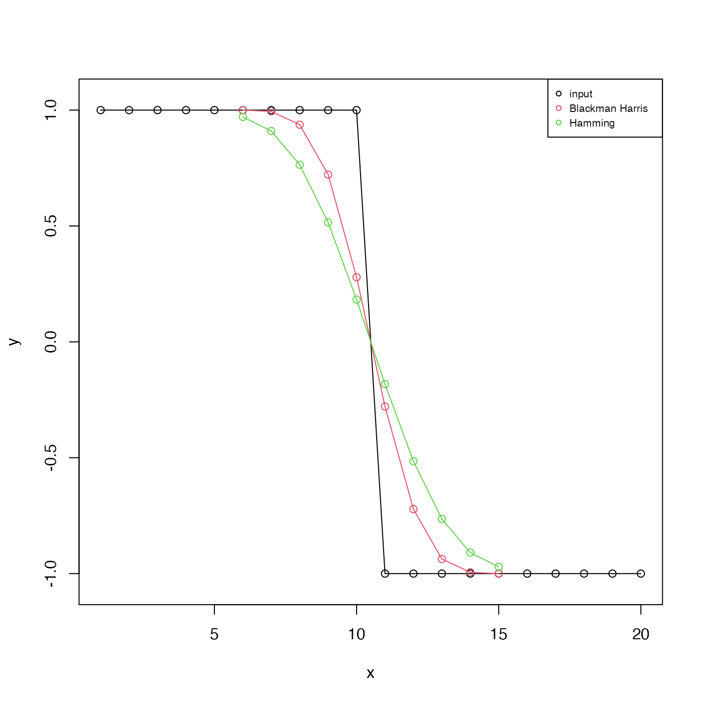

The filter is suitable for use by filter(),
convolve() or (for the asKernal=TRUE case) with
kernapply(). Note that convolve() should be faster
than filter(), but it cannot be used if the time series has
missing values. For the Blackman-Harris filter, the half-power frequency is
at 1/m cycles per time unit, as shown in the “Examples”
section. When using filter() or kernapply() with
these filters, use circular=TRUE.
makeFilter( type = c("blackman-harris", "rectangular", "hamming", "hann"), m, asKernel = TRUE )
| type | a string indicating the type of filter to use. (See Harris (1978) for a comparison of these and similar filters.)
|
|---|---|
| m | length of filter. This should be an odd number, for any non-rectangular filter. |
| asKernel | boolean, set to |
If asKernel is FALSE, this returns a list of filter
coefficients, symmetric about the midpoint and summing to 1. These may be
used with filter(), which should be provided with argument
circular=TRUE to avoid phase offsets. If asKernel is
TRUE, the return value is a smoothing kernel, which can be applied to
a timeseries with kernapply(), whose bandwidth can be determined
with bandwidth.kernel(), and which has both print and plot
methods.
F. J. Harris, 1978. On the use of windows for harmonic analysis with the discrete Fourier Transform. Proceedings of the IEEE, 66(1), 51-83 (http://web.mit.edu/xiphmont/Public/windows.pdf.)
library(oce) # 1. Demonstrate step-function response y <- c(rep(1, 10), rep(-1, 10)) x <- seq_along(y) plot(x, y, type='o', ylim=c(-1.05, 1.05))BH <- makeFilter("blackman-harris", 11, asKernel=FALSE) H <- makeFilter("hamming", 11, asKernel=FALSE) yBH <- stats::filter(y, BH) points(x, yBH, col=2, type='o')# 2. Show theoretical and practical filter gain, where # the latter is based on random white noise, and # includes a particular value for the spans # argument of spectrum(), etc. if (FALSE) { # need signal package for this example r <- rnorm(2048) rh <- stats::filter(r, H) rh <- rh[is.finite(rh)] # kludge to remove NA at start/end sR <- spectrum(r, plot=FALSE, spans=c(11, 5, 3)) sRH <- spectrum(rh, plot=FALSE, spans=c(11, 5, 3)) par(mfrow=c(2, 1), mar=c(3, 3, 1, 1), mgp=c(2, 0.7, 0)) plot(sR$freq, sRH$spec/sR$spec, xlab="Frequency", ylab="Power Transfer", type='l', lwd=5, col='gray') theory <- freqz(H, n=seq(0,pi,length.out=100)) # Note we must square the modulus for the power spectrum lines(theory$f/pi/2, Mod(theory$h)^2, lwd=1, col='red') grid() legend("topright", col=c("gray", "red"), lwd=c(5, 1), cex=2/3, legend=c("Practical", "Theory"), bg="white") plot(log10(sR$freq), log10(sRH$spec/sR$spec), xlab="log10 Frequency", ylab="log10 Power Transfer", type='l', lwd=5, col='gray') theory <- freqz(H, n=seq(0,pi,length.out=100)) # Note we must square the modulus for the power spectrum lines(log10(theory$f/pi/2), log10(Mod(theory$h)^2), lwd=1, col='red') grid() legend("topright", col=c("gray", "red"), lwd=c(5, 1), cex=2/3, legend=c("Practical", "Theory"), bg="white") }